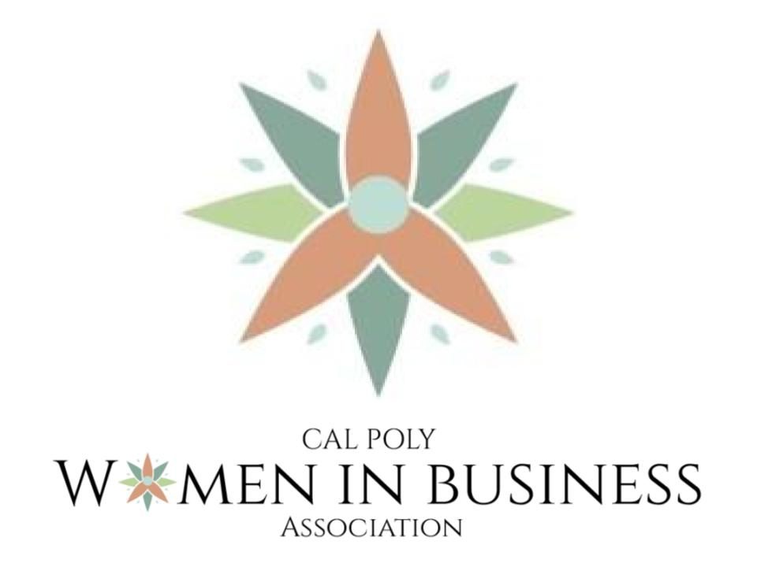

Microsoft – Data Analyst Intern
June 2024 – Present
- • Developed AI models for automating medical document processing
- • Used Power BI, Power Automate & Power Apps for automation
- • Built dashboards using Excel & Dataverse for decision-making

GreenLight Ag. – AI Data Engineering Intern
June 2021 – August 2021
- • Trained AI to differentiate crops vs. weeds using ML
- • Ran 12+ in-field experiments with a data-collecting rover
- • Used Gimp, Linux, and scripting for data prep and analysis

Mathnasium – Math Instructor
July 2021 – August 2022
- • Taught 75+ students from Pre-K to Pre-Calculus
- • 94% of students improved understanding; 88% improved grades
- • Maintained studio operations & personalized learning plans
Student Managed Portfolio Project – Analyst
Sept 2024 – Present
- • Managed $1.6M Cal Poly healthcare portfolio
- • Performed financial analysis & equity research
- • Used stats tools to evaluate healthcare market trends

Women in Business Leadership Academy – Mentor
Jan 2024 – March 2024
- • Mentored first-year women on professional & career development
- • Led resume, interview, and networking workshops
- • Facilitated weekly support and check-ins